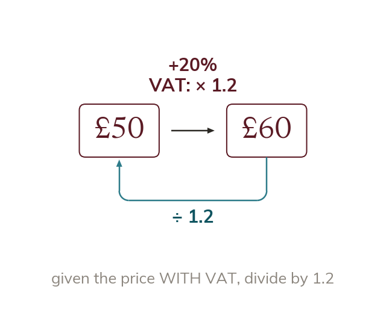

VAT as a reverse percentage problem
A price including 20% VAT is 120% of the pre-VAT price. So divide it by 1.2 to find the price before VAT.
VAT (Value Added Tax) is added on top of a pre-VAT price, so a price including 20% VAT is 120% of the original pre-VAT price - the multiplier is 1.2. If you're given the price INCLUDING VAT and asked for the price BEFORE VAT, that given price is the new amount, not the original, so you divide by 1.2 to recover the original pre-VAT price.